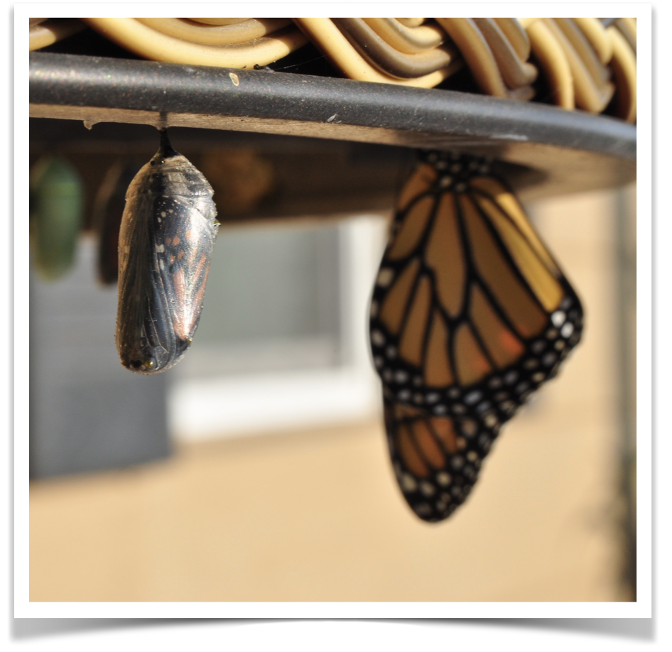
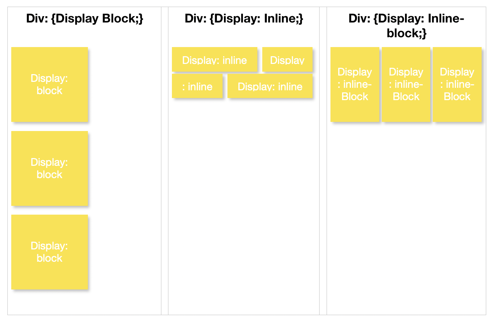

(Insert Us Shaking Shands In Your Head)
Kia Ora! I am Jojo, 35 year old, a mother to a 2 year old daughter, from Wellington
I was in the banking industry for more than 8 years. I have a strong passion for lending and love helping people get into their first home or looking at purchasing their first investment property
Last month in August 2021, I just resigned my corporate job and joined a coding bootcamp at Dev Academy. Coding was always something I wanted to learn but there was never enough time, motivation or resources. So when the opportunity presented itself, I took it with both hands
I have ideas around developing lending apps and platforms for the banking industry, which can make it easier for lenders to assess credit applications, while meeting compliance and credit policy requirements. I look forward to working with my "coding friends", learning and growing. I hope to find a job as a junior developer when I complete the course
This is a story about a time i've got blocked on a simple problem while coding and how did i solve it?

“A problem well stated is a problem half solved.” --John Dewey
“Pushing our self past our boundaries of limitation and extreme, sometimes to something that knocks off our comfort zone, it creates new neuro pathways with our brain, we become smarter, wiser, more clarity, our life becomes more fulfilling. Only because we have a totally new experience. We get a new brain with that. Neuroplasticity” ― Angie Karan
(Give yourself... time)
“The strength of character and emotional intelligence to face your failures and learn from them are at the core of success.” - Robert Kiyosaki.

{display:inline;} lays out the the objects horizontally while {display:block;} lays out the object vertically
I was a banking consultant specialised in credit and lending for different banks i.e HSBC and Westpac.
Check out my LinkedIn (feel free to add me as a connection).